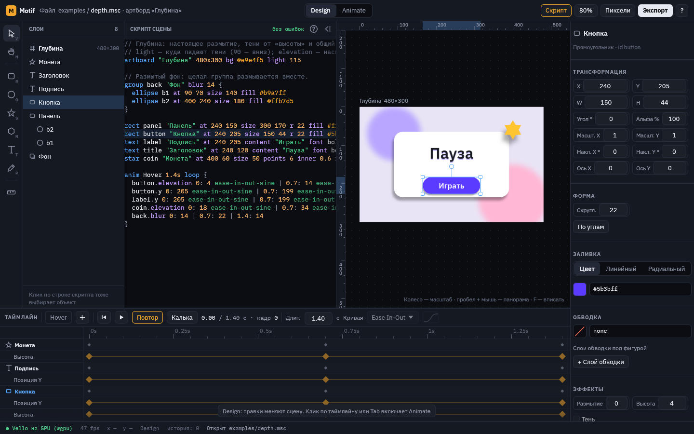
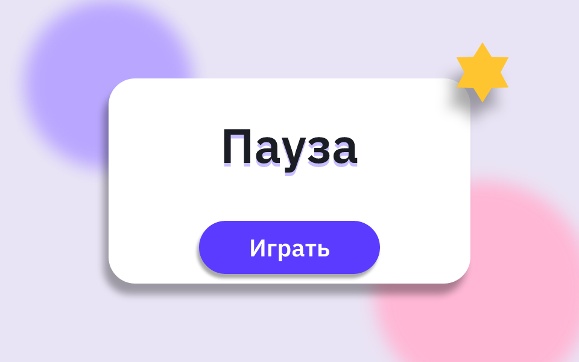

Motif
Редактор векторной анимации для игр. Сцену можно написать коротким текстом, сразу увидеть её на холсте и доделать мышью. Всё, что вы меняете мышью, записывается обратно в текст.

1 2 3 4 5 6 7 8Из чего состоит окно
- Инструменты. Выделение, рука, фигуры, текст, перо и настройки шага. Подробно — на странице «Инструменты и холст».
- Слои. Все объекты сцены по порядку отрисовки: верхний в списке рисуется поверх остальных, дети группы стоят под ней со сдвигом. Клик выбирает объект, треугольник сворачивает группу. Слой можно перетащить: верхняя часть строки кладёт его над другим слоем, нижняя — под ним, середина группы — внутрь группы (объект остаётся на том же месте артборда). Двойной клик переименовывает, правый клик открывает меню: переименовать, заблокировать, скрыть, удалить. Заблокированный объект (
locked, замок в строке) рисуется как обычно, но клики по холсту проходят сквозь него. Разделы панели свойств тоже сворачиваются кликом по заголовку. - Скрипт сцены. Текст, из которого строится сцена. Правите текст — холст сразу перерисовывается. Строки выбранного объекта подсвечены. Язык описан на странице «Скрипт сцены».
- Холст. Артборд — это рамка кадра, то, что попадёт в игру. Колесо мыши меняет масштаб, пробел с мышью двигают холст, F вписывает артборд в окно.
- Свойства. Числа и цвета выбранного объекта. Когда ничего не выбрано, здесь настройки артборда: свет сцены и подложка. См. «Панель свойств».
- Таймлайн. Анимации сцены, ключи и кривые. См. «Анимация».
- Всё / UI / Игра (справа сверху, пишется в строку
artboardсловомuiилиgame). В режиме UI раздел «Интерфейс» и экспорт UI-набора выходят вперёд, а кости, физика, 3D-тела, орбиты, кисти, мир и свет сцены спрятаны; кнопка «Добавить состояния Hover и Press» заводит анимации состояний. В режиме «Игра» спрятан раздел «Интерфейс» и экспорт UI-набора. «Всё» показывает всё. Новая сцена открывается в режиме «Игра», новый UI-набор — в режиме UI. - Design / Animate. В Design правки меняют саму сцену. В Animate они ставят ключи на текущем времени (Tab переключает режим).
- Скрипт, масштаб, «Пиксели», «Экспорт», «?». «Скрипт» прячет и показывает текст, «Пиксели» показывает сцену так, как она будет выглядеть после пикселизации, «Экспорт» сохраняет кадры и палитру и пикселизирует кадры через PixaTool, «?» открывает справку по клавишам.
Быстрый старт за пять минут
- Откройте пример. «Файл → Открыть…» и выберите
examples\bounce.msc. Примеры лежат в папке Motif рядом с программой. - Подвиньте объект мышью. Перетащите мяч: число после
atв его строке скрипта поменяется само. - Поправьте текст. Замените в строке мяча
fill redнаfill #3b5bff, и мяч на холсте станет синим. - Запустите анимацию. Кнопка ▶ на таймлайне или пробел. Выпадающий список над дорожками переключает анимации сцены.
- Поставьте ключ. Включите Animate, переведите время кликом по линейке таймлайна и подвиньте объект: на этом времени появится ключ, а в блоке
animдобавится запись. - Сохраните. Ctrl+S. Сцена — это обычный текстовый файл
.msc, его удобно хранить в git рядом с игрой.
Главная идея. Текст и картинка всегда совпадают. Значение, заданное формулой или циклом, редактор не ломает: правку мышью он допишет отдельной строкой в блок override.
Примеры в комплекте
| Файл | Что показывает |
|---|---|
bounce.msc | Переменные, цикл, несколько анимаций, кривые |
gem.msc | Градиенты и маска у группы |
card.msc | Свойства из веб-вёрстки: углы, тень, пунктир, наложение, наклон, точка вращения |
title.msc | Текст, слои обводки, анимация букв |
depth.msc | Размытие, «высота» и свет сцены, их анимация |
symbols.msc | Символы: монеты, кристаллы и мячи из одного описания, с параметрами |
machine.msc | Машина состояний: персонаж бегает, прыгает и получает урон по входам speed, jump и hurt |
tunnel.msc | Мягкое тело: шар протискивается через тоннель, форму считает физика |
jelly.msc | Мягкие тела друг с другом: желейные шарики падают в чашу и ложатся горкой |
bones.msc | Кости: щупальце гнётся от поворотов костей, рука тянется к цели через IK |
bodies.msc | 3D-тела: куб, цилиндр, конус, призма, пирамида, монета и лента вращаются в пространстве |
brushes.msc | Процедурные кисти: неровный контур, дрожание линии, штриховка, зерно и свет ступенями |
modern-button.msc | Кнопка «Modern Button» с Uiverse.io, повторённая по её CSS: кольцо, заливка кругом, стрелки, нажатие; машина состояний hover/press |
menu.msc | Меню паузы на стеке и привязках: панель по размеру столбика кнопок, «закрыть» в углу — экспорт экраном в сцену Godot |
ui-effects.msc | Эффекты интерфейса: неоновая кнопка со свечением на Hover, поле с внутренней тенью, рамка с градиентной обводкой, бумага с шумом |
ui-kit.msc | UI-набор: кнопка с подписью, панель, ProgressBar, CheckBox, слайдер, прокрутка, Label и подсказка — экспорт в тему Godot |
morph.msc | Морфинг: шар перетекает в звезду и сердце, «play» в «pause», меню в крестик |

depth.msc после экспорта: размытый фон и тени, которые сами следуют за светом сцены.Установка и обновление
Motif не требует установки: это папка с motif-editor.exe (редактор) и motif.exe (командная строка). Чтобы обновиться, запустите update.bat в этой папке или выберите «Файл → Проверить обновления…». Программа и эта документация заменятся новой версией, а ваши сцены и изменённые примеры останутся на месте.
Холст рисуется на видеокарте (Vello через DirectX 12 или Vulkan). Если видеокарта недоступна, редактор сам переходит на рисование процессором. Что используется сейчас, написано в строке состояния внизу слева.